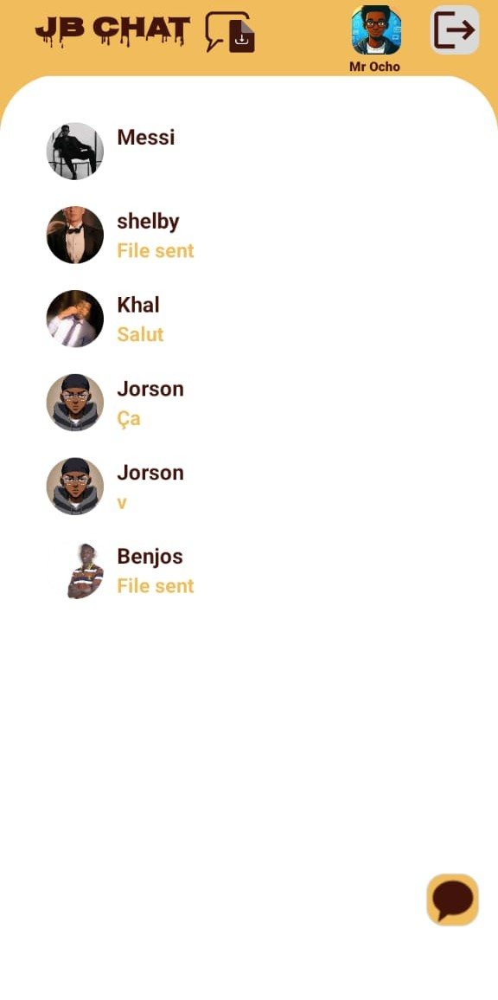
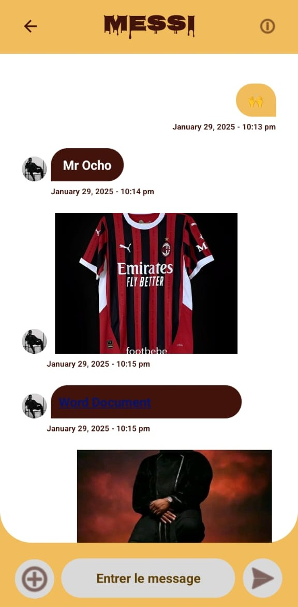
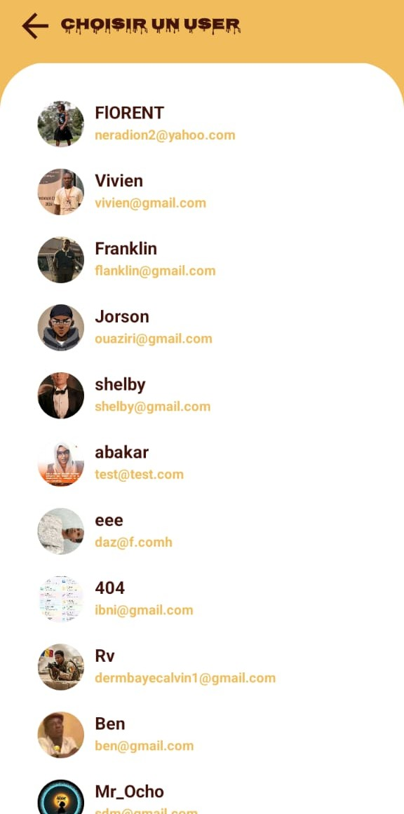

Contribution
Conception et développement de l'application avec intégration des services Firebase.
PROJET · JBCHAT
Application Android de messagerie . Projet réalisé en collaboration avec un autre développeur
Application de messagerie avec authentification et échanges de messages entre utilisateurs.
Application de messagerie avec authentification et échanges de messages entre utilisateurs. Ce projet constitue un exemple concret de mise en pratique de compétences en développement logiciel et en conception d'interfaces.



Conception et développement de l'application avec intégration des services Firebase.
Analyse du besoin, conception, développement et vérification des fonctionnalités.
Construire une solution fonctionnelle et adaptée à l'usage visé.